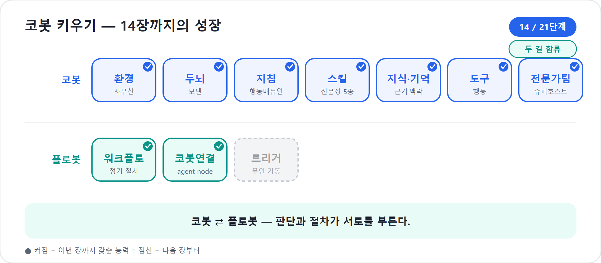

14장. 두 갈래 길이 만나다 — Agent와 Workflow를 엮는다
13장에서 우리는 플로봇의 무대를 보았다. Workflows는 정해진 절차를 어김없이 도는 설비다. 그런데 현실의 일은 늘 한 가지 색이 아니다. 고객 메일을 처리한다고 해보자. 메일을 읽고 청구 문의인지 기술 문제인지 나누는 일은 분류다. 환불이 필요한지 판단하는 일은 규정 해석이다. 승인 금액이 크면 사람에게 묻고, 승인되면 답장을 보내고, 기록은 SharePoint에 남겨야 한다. 판단과 절차가 한 문장 안에 뒤섞여 있다.
그래서 14장의 질문은 단순하다. 코봇과 플로봇을 어떻게 한 흐름에 세울 것인가? 답은 양방향이다. 워크플로는 중간에 agent node(절차 중간에서 판단 코봇을 부르는 블록)로 에이전트를 부르고, 에이전트는 특정 트리거를 가진 워크플로를 tool로 부른다. 절차가 판단을 부르고, 판단이 절차를 부른다. 이 장은 3장에서 갈라졌던 두 갈래 길이 실제 제품 안에서 만나는 자리다.
서로를 부르는 두 동료
Copilot Studio의 새 Workflows에서 핵심 연결 고리는 agent node다. 워크플로 안에 Agent 블록을 두면, 플로봇이 정해진 절차를 돌다가 유연한 판단이 필요한 순간 코봇을 부른다. 예를 들어 고객 메일 분류는 Classify(텍스트 분류 AI 액션)가 맡을 수 있지만, “이 고객에게 어떤 톤으로 답장해야 하는가”, “환불 정책을 고려하면 승인 요청이 필요한가”처럼 맥락이 필요한 판단은 에이전트가 더 잘한다.
반대 방향도 있다. 공식 Learn의 flow-agent 문서는 agent
flow나 workflow를 에이전트의 tool로 추가하는 조건을 설명한다. 핵심은
워크플로가 When an agent calls the flow 트리거와
Respond to the agent 액션을 가져야 한다는 점이다.
그렇게 만든 워크플로는 코봇이 필요할 때 도구처럼 호출할 수 있다. 단,
실시간 응답이어야 하고, 게시되어 있어야 하며, 에이전트 액션 제한 안에서
응답하도록 설계해야 한다.
| 방향 | 제품 장치 | 비유 | 예 |
|---|---|---|---|
| 워크플로 → 에이전트 | Agent node | 컨베이어벨트가 전문가 작업자를 부름 | 환불 답장 초안 작성, 예외 상황 판단 |
| 에이전트 → 워크플로 | When an agent calls the flow 트리거 + tool 추가 | 코봇이 설비 버튼을 누름 | 승인 라우팅 시작, 보고서 저장·발송 |
이 양방향성을 정확히 이해해야 한다. agent node는 “워크플로 안에 에이전트가 들어온다”는 뜻이고, tool로 추가된 워크플로는 “에이전트가 결정적 절차를 실행한다”는 뜻이다. 둘은 비슷해 보이지만 운전자가 다르다.
코봇 한마디
"제가 플로봇을 부를 수도 있고, 플로봇이 저를 부를 수도 있어요. 중요한 건 누가 먼저 운전대를 잡았는지 알고, 판단과 절차를 헷갈리지 않는 거예요!"
누가 운전대를 잡는가
엮을 수 있다고 해서 아무렇게나 섞으면 설계가 흐려진다. 가장 먼저 정할 것은 운전대다. 지금 이 업무의 주도권이 코봇에게 있는가, 플로봇에게 있는가.
코봇이 운전대를 잡는 경우는 사용자의 요청이 모호하고 목표 중심일 때다. “이번 주 프로젝트 위험을 봐줘”, “고객 불만 메일을 처리해줘”, “워크숍 준비 상황을 보고서로 만들어줘” 같은 요청은 먼저 해석이 필요하다. 코봇이 사용자의 의도를 읽고, 9장의 Skill과 10장의 지식, 11장의 도구를 조합해 무엇을 해야 할지 정한다. 그러다 정해진 절차가 필요해지면 워크플로 tool을 호출한다.
플로봇이 운전대를 잡는 경우는 시작 신호와 경로가 분명할 때다. “새 메일이 오면”, “목록에 항목이 생기면”, “매주 월요일 오전 9시가 되면” 같은 사건이 플로봇을 깨운다. 플로봇은 분류, 추출, 저장, 알림을 정해진 순서대로 처리한다. 다만 중간에 규칙만으로는 부족한 지점이 나오면 agent node로 코봇을 부른다.
| 업무 장면 | 운전대 | 이유 |
|---|---|---|
| 사용자가 “이 프로젝트 고위험인지 봐줘”라고 요청 | 코봇 | 맥락 해석과 리스크 판단이 먼저다 |
| 고위험 판정 뒤 정해진 결재선으로 알림 | 플로봇 | 절차·대상·기록이 정해져 있다 |
| 공유 메일함에 고객 메일 도착 | 플로봇 | 시작 신호가 사건 기반이다 |
| 고객 사정과 정책을 고려한 답장 초안 | 코봇 | 지식과 톤 조절이 필요하다 |
| 승인 후 SharePoint와 Teams에 기록 | 플로봇 | 같은 경로로 반복되어야 한다 |
한 업무 안에서도 운전자는 여러 번 바뀐다. 중요한 것은 바뀌는 지점을 의식적으로 설계하는 것이다. 그 지점을 핸드오프 포인트라고 부르자. 핸드오프 포인트가 흐릿하면 코봇은 필요 이상으로 자유롭게 행동하고, 플로봇은 판단해야 할 일을 억지로 규칙화한다.
플로봇 한마디
"운전대를 넘기는 지점은 흐릿하면 안 돼요. '여기까지는 제가 절차대로, 여기서부터는 코봇이 판단'을 분명히 표시해 두면 사고가 안 납니다!"
Agent node — 워크플로 안의 작은 전문가
Agent node는 워크플로 안에서 에이전트를 호출하는 블록이다. 공개 데모에서는 기존 Copilot Studio 에이전트를 선택하거나, 해당 워크플로를 위해 작은 에이전트를 정의해 메시지를 넘기는 장면이 소개되었다. 이때 워크플로는 에이전트에게 필요한 입력을 넘긴다. 고객 메일 제목, 본문, 분류 결과, 감정 상태, 주문 금액 같은 값이다. 에이전트는 자신의 지침·지식·도구·스킬을 이용해 결과를 돌려준다.
좋은 agent node는 “똑똑한 사람에게 애매하게 부탁”하지 않는다. 입력과 기대 출력이 분명하다.
입력
- customerEmailSubject
- customerEmailBody
- category = billing
- sentiment = negative
- policySummary 또는 연결된 지식
요청
- 고객에게 보낼 답장 초안을 작성한다.
- 환불 승인이 필요한지 판단한다.
- 필요한 경우 refundAmount와 approvalReason을 구조화해 돌려준다.
출력
- draftReply
- requiresApproval: true/false
- refundAmount
- reason이처럼 출력 모양을 잡아야 다음 노드가 흔들리지 않는다. 플로봇은
에이전트의 긴 산문을 읽고 감으로 다음 길을 고르는 존재가 아니다. 다음
If/Else가 requiresApproval = true를 보고 갈라질 수 있도록,
에이전트에게 구조화된 답을 요구해야 한다.
팁
agent node에 넘기는 메시지는 “친절한 대화”보다 “업무 인수인계서”에 가깝게 쓴다. 무엇을 판단해야 하는지, 어떤 형식으로 돌려줘야 하는지, 어떤 규칙을 우선해야 하는지 분명히 적는다.
코봇이 워크플로를 tool로 부르는 경우
반대로 코봇이 운전대를 잡고 있다가 플로봇을 부르는 흐름을 보자. 사용자가 이렇게 말한다.
“코봇, 이번 주 워크숍 준비 리스크를 점검하고, 고위험이면 바로 에스컬레이션해줘.”
코봇은 먼저 9장의 risk-checker Skill로 위험을 분석한다.
장소 예약 지연, 예산 초과 가능성, 외부 강사 계약 미확정 같은 항목을 보고
고위험이라고 판단한다. 이때 코봇이 직접 Teams 메시지를 여러
명에게 보내고, SharePoint 항목을 만들고, 승인 요청을 발송하도록 자유롭게
맡기면 위험하다. 누구에게 어떤 순서로 알릴지가 매번 같아야 하기
때문이다.
그래서 우리는 고위험 에스컬레이션 워크플로를 만든다.
이 워크플로는 When an agent calls the flow 트리거로
시작한다. 입력은 projectName, riskSummary,
severity, requestedBy 정도로 둔다. 마지막에는
Respond to the agent 액션으로 “에스컬레이션 요청 ID”와
“현재 상태”를 돌려준다. 그런 뒤 Build 탭의 Tools 영역에서 이 워크플로를
코봇의 tool로 추가한다.
사용자 요청
→ 코봇: 리스크 분석
→ severity = high
→ 코봇이 workflow tool 호출
입력: 프로젝트명, 리스크 요약, 심각도
→ 플로봇: 결재선 알림, Teams 게시, SharePoint 기록
→ Respond to agent: escalationId, status
→ 코봇: 사용자에게 결과 설명이 설계의 장점은 명확하다. 판단은 코봇이 하고, 정해진 실행은 플로봇이 한다. 사용자는 한 명의 동료에게 말한 것처럼 느끼지만, 뒤에서는 에이전트와 워크플로가 역할을 나누어 일한다.
함정
에이전트가 부르는 워크플로는 응답 시간이 중요하다. 공식 문서는 에이전트 tool로 쓰려면 실시간 응답으로 구성하고, 일반적인 실행이 액션 제한 안에 들어오도록 최적화하라고 안내한다. 오래 걸리는 후속 작업은 응답 뒤에 이어가도록 설계할 수 있다. 코봇이 기다리는 동안 끝나야 할 일과, 나중에 계속해도 되는 일을 분리하자.
"제가 고위험을 알아차리는 것과, 정해진 사람들에게 같은 순서로 알리는 것은 다른 능력이에요. 판단은 제가 하고, 반복 실행은 플로봇 버튼을 눌러 맡기면 깔끔합니다!"
M365 Copilot node — 회사 자료실을 부르는 길
새 Workflows의 또 다른 중요한 연결점은 M365 Copilot node다. 워크플로 안에서 Microsoft 365 Copilot과 Researcher, Analyst, 커스텀 M365 에이전트를 직접 호출하는 블록이다. Copilot Studio 에이전트가 업무 시스템과 에이전트 설계에 강하다면, M365 Copilot node는 Word, SharePoint, Teams, OneDrive 같은 Microsoft 365 맥락을 활용하는 데 의미가 있다.
예를 들어 기술 지원 메일이 왔다고 하자. Classify가
technical로 분류했다. 이때 워크플로는 M365 Copilot node를
호출해 “내부 지식 문서와 최근 Teams 논의를 참고해 고객에게 보낼 해결
안내 초안을 만들어 달라”고 요청할 수 있다. 또는 Researcher를 불러 경쟁사
조사 초안을 만들고, Analyst를 불러 엑셀 기반 추세 요약을 만들게 할 수
있다. 커스텀 M365 에이전트가 있다면 그 에이전트의 전문성도 워크플로
안으로 가져온다.
다만 M365 Copilot node를 만능 검색창처럼 쓰면 안 된다. 10장에서 보았듯 지식과 기억은 출처와 권한의 문제다. 워크플로는 실행 기록이 남고 여러 시스템에 행동하므로, 어떤 데이터에 접근하는지, 결과를 어디에 보내는지 더 신중해야 한다. 특히 고객·계약·인사 정보가 섞인 흐름에서는 Human review와 6부의 거버넌스 원칙을 함께 적용한다.
Classify와 Extract — 판단 전의 분류기와 스캐너
새 Workflows의 intelligent actions 가운데 입문자가 가장 빨리 체감하는 것이 Classify와 Extract(문서에서 값 뽑기 AI 액션)다. 둘은 에이전트와 비슷해 보이지만 역할이 더 좁고 결정적 절차에 잘 붙는다.
Classify는 입력을 정해진 갈래로 나눈다. 공유 메일함에 들어온 메일을
청구, 기술, 영업,
기타로 분류하는 식이다. 공개 데모에서는 각 범주 설명과
예시를 넣어 정확도를 높이는 장면이 나온다. 기타 같은
catch-all 경로를 두면 분류가 애매할 때 안전하게 빠질 수 있다.
Extract는 문서나 메일에서 필요한 값을 뽑는다. 계약서에서 계약명, 상대 회사, 금액, 종료일을 뽑거나, 차량 등록 문서에서 VIN, 모델, 연식을 뽑는 식이다. 플로봇에게 Extract는 스캐너다. 다음 SharePoint 등록이나 승인 요청에 필요한 값을 표준 필드로 정리한다.
| 액션 | 맡길 일 | 다음 단계 예 |
|---|---|---|
| Classify | 이 입력이 어느 갈래인지 정한다 | If/Else 분기, 담당 에이전트 선택 |
| Extract | 입력에서 필요한 값을 구조화한다 | 목록 등록, 승인 메시지 작성, 조건 비교 |
| Agent node | 맥락을 보고 판단·작성한다 | 답장 초안, 정책 해석, 예외 설명 |
| M365 Copilot node | M365 데이터와 M365 에이전트의 도움을 받는다 | 내부 문서 기반 답변, 조사·분석 초안 |
현장에서
Classify와 Extract를 agent node로 모두 대체할 수는 있다. 그러나 그러면 작은 분류와 추출까지 매번 큰 판단으로 처리하게 된다. 설비 설계에서는 좁은 공구를 먼저 쓴다. 분류는 Classify, 값 추출은 Extract, 넓은 판단은 Agent node다.
"공구는 좁은 것부터예요. 분류면 Classify, 값만 뽑으면 Extract면 충분합니다. 큰 판단이 필요할 때만 코봇을 불러야 빠르고 비용도 아껴요!"
끝까지 따라가기 — 고객 메일 한 통의 여정
지금까지 Classify, agent node, M365 Copilot node, Human review를 따로 보았다. 이제 이것들을 한 줄에 꿰어, 메일 한 통이 도착해서 답장이 나가기까지를 끝까지 따라가 보자. 공유 메일함에 다음 메일이 도착했다고 하자.
받은 메일
- 제목: 결제했는데 두 번 청구됐어요
- 보낸이: hjlee@example.com
- 본문: 지난주 결제가 카드에 두 번 찍혔습니다. 환불 부탁드립니다.① 트리거 — 플로봇이 깨어난다. 공유 메일함에 새 메일이 도착하자 워크플로가 시작된다. 운전대는 플로봇이 잡는다. 시작이 사건이기 때문이다.
② Classify — 갈래를 나눈다. 메일을
청구 / 기술 / 영업 / 기타로 분류한다. 결과는
category = 청구. 애매하면 기타로 빠져 사람에게
간다.
Classify 출력 → category = 청구, confidence = 0.94③ agent node — 코봇이 판단한다. 청구 갈래에서 워크플로는 agent node로 코봇을 부른다. 메일 제목·본문·분류 결과·감정을 넘기고, 구조화된 답을 요구한다.
입력 → subject, body, category=청구, sentiment=negative
출력 → draftReply: "고객님, 이중 청구 확인 후…"
requiresApproval: true
refundAmount: 49000
reason: "동일 거래 2회 청구 확인"④ M365 Copilot node — 회사 자료로 뒷받침한다. 코봇의 판단이 환불 정책에 맞는지 확인이 필요하다. 워크플로는 M365 Copilot node를 불러 내부 환불 정책 문서와 최근 Teams 논의를 참고해 초안을 보강한다. “5만 원 이하 이중 청구는 자동 환불 대상”이라는 정책 근거가 답장 초안에 더해진다.
⑤ Human review — 사람이 한 번 본다.
requiresApproval = true이고 금액이 걸려 있으므로, 발송 전에
담당자에게 검토를 띄운다. 담당자는 초안과 환불 금액을 보고 승인한다.
(자동 환불 한도 안이라면 이 단계를 건너뛰도록 설계할 수도 있다.)
⑥ Teams·SharePoint — 절차가 마무리한다. 승인이 떨어지면 플로봇이 정해진 경로로 마친다. 고객에게 답장을 보내고, 환불 요청을 처리 시스템에 등록하고, 처리 내역을 SharePoint 목록에 기록하고, 담당 채널에 Teams로 알린다.
메일 도착
→ [플로봇] Classify: category=청구
→ [코봇] agent node: 답장 초안 + 환불 판단(requiresApproval=true)
→ [M365 Copilot node] 환불 정책 문서로 근거 보강
→ [사람] Human review: 승인
→ [플로봇] 답장 발송 · 환불 등록 · SharePoint 기록 · Teams 알림운전대가 어떻게 옮겨 다니는지 보라. 사건은 플로봇이 받고(①②), 판단은 코봇이 하며(③), 근거는 M365 자료가 받치고(④), 책임이 큰 결정은 사람이 끊고(⑤), 빠짐없는 실행은 다시 플로봇이 맡는다(⑥). 한 통의 메일 안에서 “판단은 코봇, 절차는 플로봇”이 다섯 번 손을 바꾼다. 이것이 두 갈래 길이 만나 하나의 일을 끝내는 모습이다.
러닝 예제 — 리스크에서 에스컬레이션까지
이제 13장의 보고 라인에 3부의 코봇 능력을 합쳐 보자. 프로젝트 운영에서 가장 흔한 자동화는 리스크 에스컬레이션이다. 사용자는 매주 회의록이나 상태보고서를 올린다. 코봇은 그 내용을 읽고 리스크를 정리한다. 플로봇은 고위험이면 정해진 절차로 알린다.
설계는 두 가지 방향으로 만들 수 있다.
방향 A: 코봇이 먼저 판단하고 플로봇을 부른다
사용자: “이번 주 상태보고서 보고, 고위험이면 에스컬레이션해줘.”
→ 코봇: reporter/risk-checker Skill로 리스크 분석
→ 고위험 판정
→ 워크플로 tool 호출(When an agent calls the flow)
→ 플로봇: 팀장·PMO 알림, SharePoint 리스크 항목 생성
→ Respond to agent
→ 코봇: “에스컬레이션 완료, ID는 R-2026-014입니다.”이 방향은 사용자가 코봇에게 목표를 말하는 자연스러운 업무에 좋다. 코봇이 PM처럼 듣고 판단한 뒤, 정해진 설비 버튼을 누른다.
방향 B: 플로봇이 먼저 사건을 받고 코봇을 부른다
SharePoint에 새 상태보고서 파일 업로드
→ Workflow trigger
→ Extract: 프로젝트명·기간·핵심 이슈 추출
→ Agent node: 코봇에게 리스크 판정 요청
→ If severity = high
→ Human review: 팀장 확인
→ Teams/Outlook 알림
Else
→ 정상 기록 후 종료이 방향은 사건이 먼저 생기는 업무에 좋다. 사람이 코봇에게 말을 걸지 않아도 파일 업로드가 설비를 깨운다. 플로봇이 먼저 일어나 자료를 정리하고, 판단이 필요한 지점에서 코봇을 부른다.
두 방향 모두 맞다. 차이는 시작점이다. 사용자의 목표 대화에서 출발하면 코봇이 운전대를 잡고, 시스템 사건에서 출발하면 플로봇이 운전대를 잡는다.
핸드오프 계약서를 쓴다
코봇과 플로봇을 엮을 때 가장 중요한 실무 습관은 핸드오프 계약서를 쓰는 것이다. 실제 문서 파일을 만들라는 뜻이 아니라, 설계 단계에서 입력·출력·책임을 명시하라는 뜻이다.
| 항목 | 질문 | 예 |
|---|---|---|
| 호출 방향 | 누가 누구를 부르는가? | 코봇 → 고위험 에스컬레이션 워크플로 |
| 입력 | 호출할 때 무엇을 넘기는가? | projectName, riskSummary, severity |
| 출력 | 무엇을 돌려받아야 다음 단계가 가능한가? | escalationId, status, nextOwner |
| 시간 | 코봇이 기다려야 하는가? | 100초 안에 응답, 후속 알림은 응답 뒤 실행 |
| 실패 | 실패하면 누구에게 무엇을 알리는가? | 사용자에게 실패 사유와 수동 처리 링크 안내 |
| 통제 | 사람 검토가 필요한가? | 고위험·대외 발송 전 Human review |
계약서가 없으면 두 동료가 서로의 말을 오해한다. 코봇은
“에스컬레이션해줘”라고 했는데 플로봇은 담당자 이메일이 없어 멈춘다.
플로봇은 에이전트에게 “처리해줘”라고 보냈는데 에이전트는 긴 설명만
돌려주고 approved 값은 주지 않는다. 자동화에서 모호함은
친절이 아니라 장애다.
"저와 플로봇이 손발을 맞추려면 인수인계서가 필요해요. 무엇을 받고, 무엇을 돌려줘야 하는지 정해 두면 자동화의 애매함이 확 줄어듭니다!"
무한 호출을 막는 법
양방향 호출은 강력하지만, 잘못 설계하면 서로를 계속 부르는 구조가 된다. 코봇이 워크플로를 부르고, 워크플로가 agent node로 다시 코봇을 부르고, 코봇이 또 워크플로를 부르는 식이다. 실제 제품은 여러 제한과 실행 경계가 있지만, 설계자는 처음부터 반복을 막아야 한다.
좋은 방법은 세 가지다.
- 호출 목적을 좁힌다. “프로젝트 처리” 같은 큰 tool 대신 “고위험 리스크 에스컬레이션 등록”처럼 좁은 tool을 만든다.
- 종료 조건을 둔다.
status = completed,requiresFollowUp = false같은 값을 명확히 반환한다. - 한 방향 안에서 한 번만 부르게 한다. 워크플로 안 agent node는 판단만 하고, 추가 워크플로 호출은 하지 않도록 지침을 준다.
함정
에이전트에게 “필요하면 알아서 다른 자동화를 실행해”라고 열어 두면 추적이 어려워진다. 신입에게 회사 출입카드를 모두 주는 것과 같다. 처음에는 좁은 tool, 명확한 설명, 제한된 입력으로 시작하자.
책의 지도가 닫히는 자리
이 장은 기능 설명이면서 동시에 책의 지도가 닫히는 자리다. 3장에서 우리는 모든 일을 두 갈래로 보았다. 모호하고 판단이 필요한 일은 코봇의 길, 어김없고 반복되는 일은 플로봇의 길. 9장부터 12장까지 코봇을 키웠고, 13장에서 플로봇의 무대를 세웠다. 이제 둘은 서로를 부른다.
이때 중요한 철학은 “AI가 모든 것을 하게 하자”가 아니다. 오히려 반대다. AI가 잘하는 곳과 절차가 잘하는 곳을 나누자다. 코봇은 문맥을 읽고, 플로봇은 규칙을 지킨다. 코봇은 애매한 고객 메일을 이해하고, 플로봇은 승인·저장·발송을 빠뜨리지 않는다. 둘이 함께할 때 비로소 AI 직원은 말만 잘하는 동료를 넘어 일을 끝내는 운영 체계가 된다.
핵심 정리
| # | 요점 |
|---|---|
| 1 | 코봇과 플로봇의 연결은 양방향이다. Workflows는 agent node로 에이전트를 부르고, 에이전트는 특정 트리거를 가진 Workflow를 tool로 부른다. |
| 2 | 운전대는 일의 시작점이 정한다. 목표 대화에서 출발하면 코봇, 시스템 사건에서 출발하면 플로봇이 먼저 운전한다. |
| 3 | Agent node는 워크플로 안의 유연한 판단 지점이다. 입력과 기대 출력을 구조화해야 다음 노드가 안정된다. |
| 4 | 에이전트가 부르는 워크플로는
When an agent calls the flow 트리거와 응답 액션, 게시 상태,
실시간 응답 설계가 필요하다. |
| 5 | M365 Copilot node는 Microsoft 365 Copilot, Researcher, Analyst, 커스텀 M365 에이전트를 워크플로 안에서 부르는 길이다. |
| 6 | Classify와 Extract는 좁고 유용한 intelligent actions다. 분류와 값 추출은 이들에게 맡기고, 넓은 판단은 agent node로 넘긴다. |
| 7 | 양방향 호출은 핸드오프 계약서와 종료 조건이 있어야 안전하다. “판단은 코봇, 절차는 플로봇”을 끝까지 지킨다. |
자주 묻는 질문(FAQ)
| 질문 | 답변 |
|---|---|
| agent node와 workflow tool은 같은가? | 아니다. agent node는 워크플로 안에서 에이전트를 부르는 블록이고, workflow tool은 에이전트가 워크플로를 호출하는 구조다. 방향이 다르다. |
| 코봇이 모든 절차를 직접 처리하면 안 되나? | 가능해 보여도 위험하다. 승인, 저장, 발송, 기록처럼 같은 경로가 필요한 일은 Workflows로 고정하는 편이 안전하다. |
| M365 Copilot node는 언제 쓰나? | Microsoft 365 데이터나 Researcher·Analyst·커스텀 M365 에이전트의 도움이 필요한 조사·분석·문서 기반 작업에 쓴다. |
| Classify와 Extract를 꼭 써야 하나? | 꼭은 아니지만 권장된다. 분류와 값 추출은 좁은 intelligent action으로 처리하면 워크플로가 읽기 쉽고 안정된다. |
| 서로 끝없이 호출하면 어떻게 하나? | tool 목적을 좁히고, 반환값에 종료 상태를 넣고, 워크플로 안 에이전트 지침에서 추가 호출을 제한한다. |
| 프롬프트 액션은 어디 갔나? | 이 책의 신버전 기준에서는 에이전트 쪽은 Skill, 워크플로 쪽은 agent node가 유연한 AI 판단을 맡는 것으로 설명한다. 옛 프롬프트 기능을 현재 핵심 기능처럼 섞지 않는다. |
다음 장에서는
14장에서 코봇과 플로봇은 서로를 부르는 법을 배웠다. 그러나 아직은 누군가 말을 걸거나 테스트 버튼을 눌러야 움직이는 장면이 많다. 15장에서는 트리거를 단다. 수동 실행, 다른 자동 이벤트와 에이전트 호출, 일정 실행을 구분해, 코봇과 플로봇이 정해진 때와 사건에 스스로 출근하게 만든다.
실습 — 코봇 키우기 14단계: 코봇과 플로봇을 엮는다 — agent node 양방향

〔이어받기〕 13장의 혼자 도는 플로봇 + 12장의 판단하는 코봇 팀. 둘을 한 흐름으로 잇는다.
13-a. 코봇이 플로봇을 부른다. 코봇이 리스크를 판단(Agent) → “고위험” 판정 시 플로봇의 에스컬레이션 워크플로를 호출해 결재·통보 절차를 집행한다.
13-b. 플로봇이 코봇을 부른다. 절차 중 모호한 승인 건은 플로봇이 코봇/사람에게 핸드오프한다(Human/agent review).
13-c. 두 길의 합류를 확인한다. 3장에서 갈라졌던 Agent/Workflow가 여기서 하나의 업무 흐름으로 만난다 — 책 전체 지도가 닫히는 지점.
〔성장〕 코봇은 판단을 절차와 엮고, 플로봇은 막히면 코봇을 부른다 — 혼자 도는 라인에서 대화하는 파트너로. 〔검증 포인트〕 고위험 시나리오에서 코봇→플로봇 호출이, 모호 케이스에서 플로봇→코봇 핸드오프가 일어나면 통과.